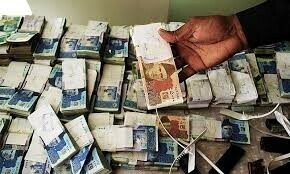

business

ISLAMABAD: The investment-to-GDP ratio in the outgoing 2022-23 stood at 13.6 per cent, lowest among the regional countries, according to the economic survey released on Thursday.
This ratio stood at 15.6pc in 2021-22. The survey attributed the year-on-year decline to a slowdown in global and domestic economic activity and contractionary macroeconomic policies.
The per capita income decreased from $1,765 to $1,568 in 2022-23. This deceleration was attributed to the significant depreciation and a contraction in economic activity.
Despite a decline in primary income, the trade balance improved in 2022-23, the survey showed. Against this background, the investment-to-GDP ratio declined while national savings increased. Consumption as a percentage of GDP also slightly contracted from 96.2pc to 94pc, the survey showed.
The estimate of Gross Fixed Capital Formation (GFCF) was Rs10 trillion, showing an increase of 8.1pc over the previous fiscal year. The industry-wise disaggregation of GFCF by the general government suggests an increase of 17.7pc, 89.2pc and 5.9pc in public administration and social security, education, and human health and social work, respectively.
The inverse of incremental capital output ratio (ICOR) represents the production efficiency or addition of investment to produce the additional unit of GDP.
The trend of Inverse ICOR suggests that, despite achieving high GDP growth, investment is not appearing as a driver of growth. Over the years, the marginal increase in investment is either falling or at the low level, which is required to produce the additional unit of GDP.
Published in Dawn, June 9th, 2023
Follow Dawn Business on Twitter, LinkedIn, Instagram and Facebook for insights on business, finance and tech from Pakistan and across the world.